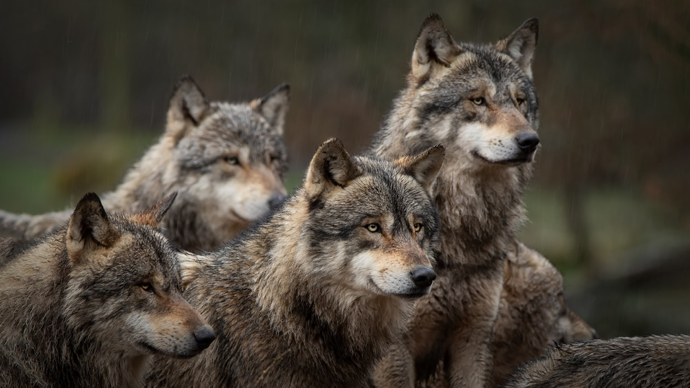
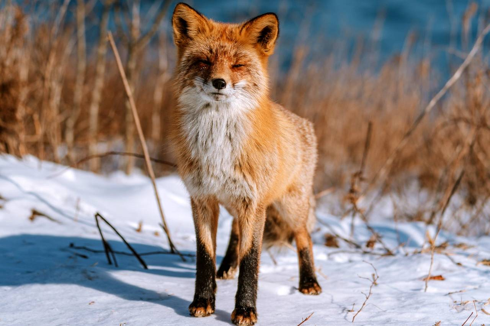
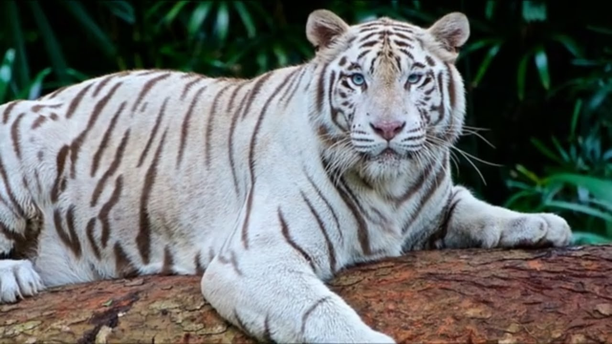
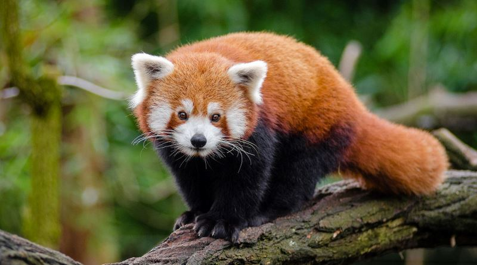

Cacatuas ou catatuas são aves psitaciformes, pertencentes à família Cacatuidae. São muito semelhantes aos papagaios em relação ao bico em formato de banana e morfologia zigodáctila dos pés. Como características distintivas, as cacatuas apresentam uma crista móvel e plumagem de cores simples.

Lobos
O lobo é uma espécie de mamífero canídeo do gênero Canis. É um sobrevivente da Era do Gelo, originário do Pleistoceno Superior, cerca de 300 mil anos atrás. É o maior membro remanescente selvagem da família canidae.

Raposa
Raposas são pequenos a médios mamíferos onívoros pertencentes a vários gêneros da família Canidae. As raposas têm o crânio achatado, orelhas triangulares verticais, focinho pontiagudo e ligeiramente arrebitado e uma cauda longa e espessa.

Tigre branco
O tigre branco ou tigre branqueado é uma variante de pigmentação leucística do tigre do continente. É relatado na natureza de tempos em tempos nos estados indianos de Madhya Pradesh, Assam, West Bengal, Bihar, Odisha, na região de Sunderbans e especialmente no antigo estado de Rewa.
Gato
O gato ou gato doméstico é um mamífero carnívoro da família dos felídeos, muito popular como animal de estimação. Ocupando o topo da cadeia alimentar, é predador natural de diversos animais, como roedores, pássaros, lagartixas e alguns insetos.

Panda-vermelho
O panda-vermelho ou panda-ruivo, também conhecido como raposa-de-fogo ou gato-de-fogo, é um pequeno mamífero arborícola e a única espécie do gênero Ailurus. Pertence à família Ailuridae, mas já foi classificado nas famílias Procyonidae e Ursidae.